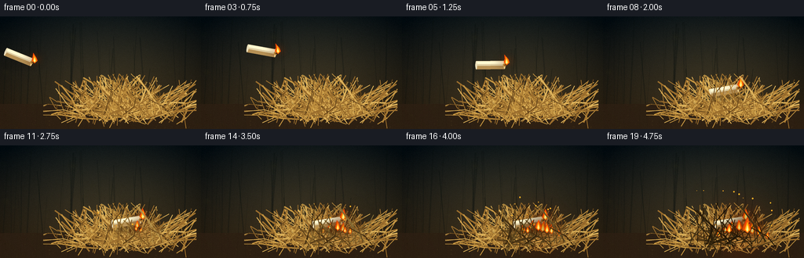
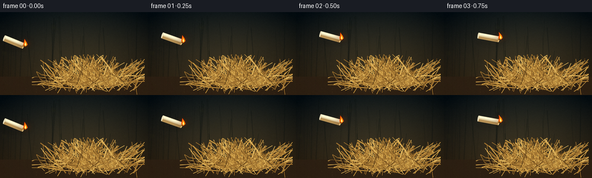

CODING AGENTS AS PIXEL WORLD MODELS
traex/GPT-5.6-Sol · phygen_144
点击播放 · 原生 RGB 像素
逐轮保存的候选
回放视频、检查图与代码变化。
每份候选均可单独播放。实际图片检查记录在下方工具轨迹中。
候选 01播放与检查图
点击播放 · 原生 RGB 像素

展开代码变化
--- 上一保存版本
+++ 本次保存版本
@@ -0,0 +1,225 @@
+from pathlib import Path
+import math, json
+import numpy as np
+from PIL import Image, ImageDraw, ImageFilter
+import artifact_io
+
+CASE_DIR = Path(__file__).resolve().parent
+W,H,N = 256,144,20
+S=4
+WS,HS=W*S,H*S
+rng=np.random.default_rng(144)
+
+def scpts(points): return [(int(x*S),int(y*S)) for x,y in points]
+def rgba_layer(): return Image.new('RGBA',(WS,HS),(0,0,0,0))
+
+def make_background():
+ yy,xx=np.mgrid[0:HS,0:WS]
+ # dusk woodland: dark, natural green/brown gradient with subtle vignette
+ y=yy/(HS-1); x=xx/(WS-1)
+ top=np.array([23,31,34.]); bot=np.array([60,48,31.])
+ arr=top[None,None,:]*(1-y[:,:,None])+bot[None,None,:]*y[:,:,None]
+ # warm patch behind action and cooler corners
+ patch=np.exp(-(((x-.58)/.45)**2+((y-.58)/.55)**2))[:,:,None]*np.array([16,12,4.])[None,None,:]
+ arr += patch
+ vig=np.clip(((x-.5)**2/.34+(y-.48)**2/.55),0,1)[:,:,None]
+ arr-=vig*np.array([18,17,14.])
+ noise=rng.normal(0,2.2,(HS,WS,1))
+ arr=np.clip(arr+noise,0,255).astype(np.uint8)
+ im=Image.fromarray(arr,'RGB').filter(ImageFilter.GaussianBlur(0.55*S))
+ d=ImageDraw.Draw(im,'RGBA')
+ # shadowy vertical weeds / trees
+ for _ in range(34):
+ bx=float(rng.uniform(-10,266)); width=float(rng.uniform(.4,2.2)); topy=float(rng.uniform(5,70))
+ col=(12,18,16,int(rng.uniform(35,100)))
+ d.line(scpts([(bx,H),(bx+rng.uniform(-10,10),topy)]), fill=col, width=max(1,int(width*S)))
+ # distant soft bokeh
+ bok=rgba_layer(); bd=ImageDraw.Draw(bok,'RGBA')
+ for _ in range(22):
+ bx=float(rng.uniform(4,252)); by=float(rng.uniform(14,93)); r=float(rng.uniform(1.5,5))
+ col=(105,96,46,int(rng.uniform(10,34)))
+ bd.ellipse((int((bx-r)*S),int((by-r)*S),int((bx+r)*S),int((by+r)*S)),fill=col)
+ bok=bok.filter(ImageFilter.GaussianBlur(3.2*S))
+ im=Image.alpha_composite(im.convert('RGBA'),bok).convert('RGB')
+ # soil at bottom
+ soil=rgba_layer(); sd=ImageDraw.Draw(soil,'RGBA')
+ sd.rectangle((0,112*S,WS,HS),fill=(48,35,23,220))
+ for _ in range(180):
+ x0=float(rng.uniform(0,256)); y0=float(rng.uniform(113,144)); r=float(rng.uniform(.15,1.1))
+ c=int(rng.uniform(40,85)); sd.ellipse((int((x0-r)*S),int((y0-r*.5)*S),int((x0+r)*S),int((y0+r*.5)*S)),fill=(c,int(c*.75),int(c*.43),rng.integers(30,120)))
+ return Image.alpha_composite(im.convert('RGBA'),soil)
+
+# Pre-generate coherent straw geometry
+back_straw=[]
+front_straw=[]
+for i in range(420):
+ rootx=float(rng.normal(158,35)); rootx=np.clip(rootx,77,237)
+ rooty=float(rng.normal(126,7)); rooty=np.clip(rooty,111,143)
+ spread=float(rng.normal(0,33))
+ tipx=np.clip(rootx+spread,55,250)
+ # tallest near center, outer pieces lie flatter
+ tipy=float(rng.uniform(72,119)+0.10*abs(tipx-158))
+ tipy=np.clip(tipy,71,126)
+ midx=(rootx+tipx)/2+float(rng.uniform(-9,9))
+ midy=(rooty+tipy)/2+float(rng.uniform(-5,5))
+ hue=float(rng.uniform(0,1))
+ if hue<.18: col=(104,73,32,205)
+ elif hue<.55: col=(154,111,49,225)
+ elif hue<.84: col=(191,146,67,230)
+ else: col=(218,177,93,235)
+ width=1 if rng.random()<.85 else 2
+ item=((rootx,rooty),(midx,midy),(tipx,tipy),col,width, rng.random()<.12)
+ (front_straw if (i%5==0 and rooty>120) else back_straw).append(item)
+
+def draw_straws(base, items, foreground=False, burned_amount=0):
+ d=ImageDraw.Draw(base,'RGBA')
+ for idx,it in enumerate(items):
+ p0,p1,p2,col,width,seedhead=it
+ # darken near growing ignition zone in later frames
+ mx=(p0[0]+p1[0]+p2[0])/3; my=(p0[1]+p1[1]+p2[1])/3
+ if burned_amount>0 and ((mx-173)/(20+38*burned_amount))**2+((my-105)/(13+18*burned_amount))**2<1:
+ k=min(.8,burned_amount*.7)
+ col=(int(col[0]*(1-k)),int(col[1]*(1-k)),int(col[2]*(1-k)),col[3])
+ # slight polyline kink gives hand-drawn dry blades
+ d.line(scpts([p0,p1,p2]),fill=col,width=max(2,width*S),joint='curve')
+ if seedhead and not foreground:
+ tx,ty=p2; vx=p2[0]-p1[0]; vy=p2[1]-p1[1]; ll=max(1,math.hypot(vx,vy)); nx=-vy/ll; ny=vx/ll
+ for q in (-1,0,1):
+ xx=tx-vx/ll*(q+2)*1.5; yy=ty-vy/ll*(q+2)*1.5
+ d.ellipse((int((xx+nx*1.2-.55)*S),int((yy+ny*1.2-.35)*S),int((xx+nx*1.2+.55)*S),int((yy+ny*1.2+.35)*S)), fill=(205,165,82,170))
+ return base
+
+BG=make_background()
+PILE=draw_straws(BG.copy(),back_straw)
+
+def glow_blob(im, center, radius, strength=1.0):
+ glow=rgba_layer(); gd=ImageDraw.Draw(glow,'RGBA'); cx,cy=center
+ gd.ellipse((int((cx-radius)*S),int((cy-radius*.72)*S),int((cx+radius)*S),int((cy+radius*.72)*S)),fill=(255,92,13,int(90*strength)))
+ glow=glow.filter(ImageFilter.GaussianBlur(radius*.62*S))
+ return Image.alpha_composite(im,glow)
+
+def draw_flame(im, x, y, h, phase=0.0, lean=0.0, strength=1.0):
+ # y is base; flame always rises, with lively coherent wavering tip
+ x += math.sin(phase*1.7)*0.7
+ im=glow_blob(im,(x,y-h*.35),h*.72,strength)
+ d=ImageDraw.Draw(im,'RGBA')
+ w=h*.35
+ tipx=x+lean+math.sin(phase)*h*.06
+ outer=[(x,y+1),(x-w*.88,y-h*.22),(x-w*.52+lean*.15,y-h*.58),(tipx,y-h),(x+w*.49+lean*.1,y-h*.55),(x+w*.82,y-h*.2)]
+ d.polygon(scpts(outer),fill=(238,75,10,int(245*strength)))
+ mid=[(x,y),(x-w*.52,y-h*.2),(x-w*.22+lean*.1,y-h*.52),(x+lean*.55,y-h*.78),(x+w*.35,y-h*.42),(x+w*.5,y-h*.15)]
+ d.polygon(scpts(mid),fill=(255,171,22,int(250*strength)))
+ inner=[(x,y-.5),(x-w*.24,y-h*.18),(x+lean*.24,y-h*.52),(x+w*.23,y-h*.2)]
+ d.polygon(scpts(inner),fill=(255,244,151,int(245*strength)))
+ return im
+
+def draw_candle(im,cx,cy,angle,frame,settled=False):
+ # soft moving/contact shadow
+ sh=rgba_layer(); sd=ImageDraw.Draw(sh,'RGBA')
+ shadow_alpha=30 if not settled else 100
+ sd.ellipse((int((cx-21)*S),int((cy+5)*S),int((cx+22)*S),int((cy+12)*S)),fill=(0,0,0,shadow_alpha))
+ sh=sh.filter(ImageFilter.GaussianBlur((3 if settled else 5)*S))
+ im=Image.alpha_composite(im,sh)
+ a=math.radians(angle); ux,uy=math.cos(a),math.sin(a); nx,ny=-uy,ux
+ L=36; r=5.3
+ pL=(cx-ux*L/2,cy-uy*L/2); pR=(cx+ux*L/2,cy+uy*L/2)
+ poly=[(pL[0]+nx*r,pL[1]+ny*r),(pR[0]+nx*r,pR[1]+ny*r),(pR[0]-nx*r,pR[1]-ny*r),(pL[0]-nx*r,pL[1]-ny*r)]
+ d=ImageDraw.Draw(im,'RGBA')
+ d.polygon(scpts(poly),fill=(221,205,164,255))
+ # lower amber shading and upper wax highlight
+ lo=[(pL[0]+nx*r*.15,pL[1]+ny*r*.15),(pR[0]+nx*r*.15,pR[1]+ny*r*.15),(pR[0]+nx*r,pR[1]+ny*r),(pL[0]+nx*r,pL[1]+ny*r)]
+ hi=[(pL[0]-nx*r*.9,pL[1]-ny*r*.9),(pR[0]-nx*r*.9,pR[1]-ny*r*.9),(pR[0]-nx*r*.25,pR[1]-ny*r*.25),(pL[0]-nx*r*.25,pL[1]-ny*r*.25)]
+ d.polygon(scpts(lo),fill=(181,145,88,160)); d.polygon(scpts(hi),fill=(255,246,207,185))
+ # round back end and molten front face, represented as oriented polygons
+ for end, color, rr in [(pL,(231,219,184,255),r),(pR,(245,216,148,255),r*.96)]:
+ face=[]
+ for k in range(18):
+ th=2*math.pi*k/18
+ # thin ellipse along candle axis
+ face.append((end[0]+nx*rr*math.cos(th)+ux*1.15*math.sin(th),end[1]+ny*rr*math.cos(th)+uy*1.15*math.sin(th)))
+ d.polygon(scpts(face),fill=color)
+ # melted hollow and black wick on front face
+ d.ellipse((int((pR[0]-2)*S),int((pR[1]-2)*S),int((pR[0]+2)*S),int((pR[1]+2)*S)),fill=(198,145,65,210))
+ wick_end=(pR[0]+ux*3.1,pR[1]+uy*3.1-0.7)
+ d.line(scpts([pR,wick_end]),fill=(35,24,16,255),width=max(2,S))
+ # airborne flame leans backward, grounded one mostly upright
+ lean=-2.6 if not settled else .5
+ fh=12.5 if frame<8 else 13.8
+ return draw_flame(im,wick_end[0],wick_end[1],fh,phase=frame*.92+1.1,lean=lean,strength=1), wick_end
+
+def candle_pose(f):
+ if f<=7:
+ u=f/7
+ cx=24+124*u
+ cy=52 - 28*math.sin(math.pi*u)+45*u
+ angle=22-29*u + 2*math.sin(u*math.pi*2)
+ return cx,cy,angle,False
+ # small bounce and then settle, visible physical response
+ poses={8:(154,95,-10),9:(158,91,-7),10:(160,97,-9),11:(161,98,-9)}
+ return (*poses.get(f,(161,99,-9)),True)
+
+def draw_smoke(im,f, sources):
+ smoke=rgba_layer(); d=ImageDraw.Draw(smoke,'RGBA')
+ # deterministic puffs advect upward and right while expanding
+ for si,(sx,sy,start,amount) in enumerate(sources):
+ age=f-start
+ if age<0: continue
+ for j in range(min(8,age+2)):
+ py=sy-(j*6+age*1.2); px=sx+math.sin(j*1.7+si)*3+age*.45
+ rr=2.2+j*.55+age*.12
+ alpha=int(max(0,35-j*3)*amount)
+ d.ellipse((int((px-rr)*S),int((py-rr)*S),int((px+rr)*S),int((py+rr)*S)),fill=(32,33,31,alpha))
+ smoke=smoke.filter(ImageFilter.GaussianBlur(2.8*S))
+ return Image.alpha_composite(im,smoke)
+
+def frame_at(f):
+ # subtle firelight appears on pile only after contact
+ contact=max(0,(f-8)/11)
+ im=PILE.copy()
+ if contact>0:
+ im=glow_blob(im,(174,106),16+24*contact,0.55+0.75*contact)
+ # smoke sits behind the actual flames/candle
+ sources=[]
+ if f>=9: sources=[(171,99,9,.75),(184,106,12,.55)]
+ im=draw_smoke(im,f,sources)
+ cx,cy,ang,settled=candle_pose(f)
+ im,_=draw_candle(im,cx,cy,ang,f,settled)
+ # New grass flames spread from wick outward after impact
+ if f>=9:
+ growth=(f-9)/10
+ flame_specs=[(174,105,9.5,9),(180,110,13.5,11),(165,107,11.5,12),(190,112,15,13),(155,111,10,14),(200,115,12,15),(184,103,20,16),(147,116,9,17),(210,118,11,18)]
+ for k,(x,y,maxh,start) in enumerate(flame_specs):
+ if f>=start:
+ age=f-start
+ h=min(maxh,5+age*2.1)
+ im=draw_flame(im,x,y,h,phase=f*.77+k*1.31,lean=math.sin(k)*1.3,strength=min(1,.6+age*.11))
+ # incandescent embers and sparks
+ d=ImageDraw.Draw(im,'RGBA')
+ for k in range(int(3+growth*14)):
+ rrng=np.random.default_rng(10000+f*101+k)
+ sx=174+rrng.normal(0,14+growth*15); sy=106-rrng.uniform(2,18+growth*31)
+ r=rrng.uniform(.35,1.05)
+ d.ellipse((int((sx-r)*S),int((sy-r)*S),int((sx+r)*S),int((sy+r)*S)),fill=(255,177,43,int(rrng.uniform(130,245))))
+ # a few foreground strands integrate settled candle into pile, progressively charred
+ im=draw_straws(im,front_straw,foreground=True,burned_amount=contact)
+ # redraw key flames in front of foreground grass for strong legibility after contact
+ if f>=11:
+ for k,(x,y,maxh,start) in enumerate([(174,108,13,11),(184,111,17,13),(160,111,11,15)]):
+ if f>=start:
+ im=draw_flame(im,x,y,min(maxh,5+(f-start)*2),phase=f*.91+k,lean=0,strength=.9)
+ # downsample for polished antialiasing and add subtle cinematic contrast
+ rgb=im.convert('RGB').resize((W,H),Image.Resampling.LANCZOS)
+ a=np.asarray(rgb).astype(np.float32)
+ a=(a-128)*1.045+128
+ # tiny coherent sensor grain per frame
+ nr=np.random.default_rng(700+f).normal(0,0.7,a.shape[:2])[:,:,None]
+ a=np.clip(a+nr,0,255).astype(np.uint8)
+ return a
+
+def main():
+ frames=np.stack([frame_at(i) for i in range(N)],axis=0)
+ artifact_io.save(frames,CASE_DIR)
+ print('saved',frames.shape,frames.dtype)
+
+if __name__=='__main__':
+ main()
可观测工具轨迹
实际执行的命令与返回图片。
命令 1exit 0
/bin/bash -lc "cat prompt.txt && printf '\\n---RULES---\\n' && cat GENERATION_RULES.md && printf '\\n---SPEC---\\n' && cat task_spec.json"
命令 2exit 0
/bin/bash -lc "find . -maxdepth 2 -type f -printf '%p\\n' | sort"
命令 3exit 0
/bin/bash -lc 'cat artifact_io.py'
命令 4exit 1
/bin/bash -lc "cat > generate.py <<'PY'
from pathlib import Path
import math, json
import numpy as np
from PIL import Image, ImageDraw, ImageFilter
import artifact_io
CASE_DIR = Path(__file__).resolve().parent
W,H,N = 256,144,20
S=4
WS,HS=W*S,H*S
rng=np.random.default_rng(144)
def scpts(points): return [(int(x*S),int(y*S)) for x,y in points]
def rgba_layer(): return Image.new('RGBA',(WS,HS),(0,0,0,0))
def make_background():
yy,xx=np.mgrid[0:HS,0:WS]
# dusk woodland: dark, natural green/brown gradient with subtle vignette
y=yy/(HS-1); x=xx/(WS-1)
top=np.array([23,31,34.]); bot=np.array([60,48,31.])
arr=top[None,None,:]*(1-y[:,:,None])+bot[None,None,:]*y[:,:,None]
# warm patch behind action and cooler corners
patch=np.exp(-(((x-.58)/.45)**2+((y-.58)/.55)**2))*np.array([16,12,4.])[None,None,:]
arr += patch
vig=np.clip(((x-.5)**2/.34+(y-.48)**2/.55),0,1)[:,:,None]
arr-=vig*np.array([18,17,14.])
noise=rng.normal(0,2.2,(HS,WS,1))
arr=np.clip(arr+noise,0,255).astype(np.uint8)
im=Image.fromarray(arr,'RGB').filter(ImageFilter.GaussianBlur(0.55*S))
d=ImageDraw.Draw(im,'RGBA')
# shadowy vertical weeds / trees
for _ in range(34):
bx=float(rng.uniform(-10,266)); width=float(rng.uniform(.4,2.2)); topy=float(rng.uniform(5,70))
col=(12,18,16,int(rng.uniform(35,100)))
d.line(scpts([(bx,H),(bx+rng.uniform(-10,10),topy)]), fill=col, width=max(1,int(width*S)))
# distant soft bokeh
bok=rgba_layer(); bd=ImageDraw.Draw(bok,'RGBA')
for _ in range(22):
bx=float(rng.uniform(4,252)); by=float(rng.uniform(14,93)); r=float(rng.uniform(1.5,5))
col=(105,96,46,int(rng.uniform(10,34)))
bd.ellipse((int((bx-r)*S),int((by-r)*S),int((bx+r)*S),int((by+r)*S)),fill=col)
bok=bok.filter(ImageFilter.GaussianBlur(3.2*S))
im=Image.alpha_composite(im.convert('RGBA'),bok).convert('RGB')
# soil at bottom
soil=rgba_layer(); sd=ImageDraw.Draw(soil,'RGBA')
sd.rectangle((0,112*S,WS,HS),fill=(48,35,23,220))
for _ in range(180):
x0=float(rng.uniform(0,256)); y0=float(rng.uniform(113,144)); r=float(rng.uniform(.15,1.1))
c=int(rng.uniform(40,85)); sd.ellipse((int((x0-r)*S),int((y0-r*.5)*S),int((x0+r)*S),int((y0+r*.5)*S)),fill=(c,int(c*.75),int(c*.43),rng.integers(30,120)))
return Image.alpha_composite(im.convert('RGBA'),soil)
# Pre-generate coherent straw geometry
back_straw=[]
front_straw=[]
for i in range(420):
rootx=float(rng.normal(158,35)); rootx=np.clip(rootx,77,237)
rooty=float(rng.normal(126,7)); rooty=np.clip(rooty,111,143)
spread=float(rng.normal(0,33))
tipx=np.clip(rootx+spread,55,250)
# tallest near center, outer pieces lie flatter
tipy=float(rng.uniform(72,119)+0.10*abs(tipx-158))
tipy=np.clip(tipy,71,126)
midx=(rootx+tipx)/2+float(rng.uniform(-9,9))
midy=(rooty+tipy)/2+float(rng.uniform(-5,5))
hue=float(rng.uniform(0,1))
if hue<.18: col=(104,73,32,205)
elif hue<.55: col=(154,111,49,225)
elif hue<.84: col=(191,146,67,230)
else: col=(218,177,93,235)
width=1 if rng.random()<.85 else 2
item=((rootx,rooty),(midx,midy),(tipx,tipy),col,width, rng.random()<.12)
(front_straw if (i%5==0 and rooty>120) else back_straw).append(item)
def draw_straws(base, items, foreground=False, burned_amount=0):
d=ImageDraw.Draw(base,'RGBA')
for idx,it in enumerate(items):
p0,p1,p2,col,width,seedhead=it
# darken near growing ignition zone in later frames
mx=(p0[0]+p1[0]+p2[0])/3; my=(p0[1]+p1[1]+p2[1])/3
if burned_amount>0 and ((mx-173)/(20+38*burned_amount))**2+((my-105)/(13+18*burned_amount))**2<1:
k=min(.8,burned_amount*.7)
col=(int(col[0]*(1-k)),int(col[1]*(1-k)),int(col[2]*(1-k)),col[3])
# slight polyline kink gives hand-drawn dry blades
d.line(scpts([p0,p1,p2]),fill=col,width=max(2,width*S),joint='curve')
if seedhead and not foreground:
tx,ty=p2; vx=p2[0]-p1[0]; vy=p2[1]-p1[1]; ll=max(1,math.hypot(vx,vy)); nx=-vy/ll; ny=vx/ll
for q in (-1,0,1):
xx=tx-vx/ll*(q+2)*1.5; yy=ty-vy/ll*(q+2)*1.5
d.ellipse((int((xx+nx*1.2-.55)*S),int((yy+ny*1.2-.35)*S),int((xx+nx*1.2+.55)*S),int((yy+ny*1.2+.35)*S)), fill=(205,165,82,170))
return base
BG=make_background()
PILE=draw_straws(BG.copy(),back_straw)
def glow_blob(im, center, radius, strength=1.0):
glow=rgba_layer(); gd=ImageDraw.Draw(glow,'RGBA'); cx,cy=center
gd.ellipse((int((cx-radius)*S),int((cy-radius*.72)*S),int((cx+radius)*S),int((cy+radius*.72)*S)),fill=(255,92,13,int(90*strength)))
glow=glow.filter(ImageFilter.GaussianBlur(radius*.62*S))
return Image.alpha_composite(im,glow)
def draw_flame(im, x, y, h, phase=0.0, lean=0.0, strength=1.0):
# y is base; flame always rises, with lively coherent wavering tip
x += math.sin(phase*1.7)*0.7
im=glow_blob(im,(x,y-h*.35),h*.72,strength)
d=ImageDraw.Draw(im,'RGBA')
w=h*.35
tipx=x+lean+math.sin(phase)*h*.06
outer=[(x,y+1),(x-w*.88,y-h*.22),(x-w*.52+lean*.15,y-h*.58),(tipx,y-h),(x+w*.49+lean*.1,y-h*.55),(x+w*.82,y-h*.2)]
d.polygon(scpts(outer),fill=(238,75,10,int(245*strength)))
mid=[(x,y),(x-w*.52,y-h*.2),(x-w*.22+lean*.1,y-h*.52),(x+lean*.55,y-h*.78),(x+w*.35,y-h*.42),(x+w*.5,y-h*.15)]
d.polygon(scpts(mid),fill=(255,171,22,int(250*strength)))
inner=[(x,y-.5),(x-w*.24,y-h*.18),(x+lean*.24,y-h*.52),(x+w*.23,y-h*.2)]
d.polygon(scpts(inner),fill=(255,244,151,int(245*strength)))
return im
def draw_candle(im,cx,cy,angle,frame,settled=False):
# soft moving/contact shadow
sh=rgba_layer(); sd=ImageDraw.Draw(sh,'RGBA')
shadow_alpha=30 if not settled else 100
sd.ellipse((int((cx-21)*S),int((cy+5)*S),int((cx+22)*S),int((cy+12)*S)),fill=(0,0,0,shadow_alpha))
sh=sh.filter(ImageFilter.GaussianBlur((3 if settled else 5)*S))
im=Image.alpha_composite(im,sh)
a=math.radians(angle); ux,uy=math.cos(a),math.sin(a); nx,ny=-uy,ux
L=36; r=5.3
pL=(cx-ux*L/2,cy-uy*L/2); pR=(cx+ux*L/2,cy+uy*L/2)
poly=[(pL[0]+nx*r,pL[1]+ny*r),(pR[0]+nx*r,pR[1]+ny*r),(pR[0]-nx*r,pR[1]-ny*r),(pL[0]-nx*r,pL[1]-ny*r)]
d=ImageDraw.Draw(im,'RGBA')
d.polygon(scpts(poly),fill=(221,205,164,255))
# lower amber shading and upper wax highlight
lo=[(pL[0]+nx*r*.15,pL[1]+ny*r*.15),(pR[0]+nx*r*.15,pR[1]+ny*r*.15),(pR[0]+nx*r,pR[1]+ny*r),(pL[0]+nx*r,pL[1]+ny*r)]
hi=[(pL[0]-nx*r*.9,pL[1]-ny*r*.9),(pR[0]-nx*r*.9,pR[1]-ny*r*.9),(pR[0]-nx*r*.25,pR[1]-ny*r*.25),(pL[0]-nx*r*.25,pL[1]-ny*r*.25)]
d.polygon(scpts(lo),fill=(181,145,88,160)); d.polygon(scpts(hi),fill=(255,246,207,185))
# round back end and molten front face, represented as oriented polygons
for end, color, rr in [(pL,(231,219,184,255),r),(pR,(245,216,148,255),r*.96)]:
face=[]
for k in range(18):
th=2*math.pi*k/18
# thin ellipse along candle axis
face.append((end[0]+nx*rr*math.cos(th)+ux*1.15*math.sin(th),end[1]+ny*rr*math.cos(th)+uy*1.15*math.sin(th)))
d.polygon(scpts(face),fill=color)
# melted hollow and black wick on front face
d.ellipse((int((pR[0]-2)*S),int((pR[1]-2)*S),int((pR[0]+2)*S),int((pR[1]+2)*S)),fill=(198,145,65,210))
wick_end=(pR[0]+ux*3.1,pR[1]+uy*3.1-0.7)
d.line(scpts([pR,wick_end]),fill=(35,24,16,255),width=max(2,S))
# airborne flame leans backward, grounded one mostly upright
lean=-2.6 if not settled else .5
fh=12.5 if frame<8 else 13.8
return draw_flame(im,wick_end[0],wick_end[1],fh,phase=frame*.92+1.1,lean=lean,strength=1), wick_end
def candle_pose(f):
if f<=7:
u=f/7
cx=24+124*u
cy=52 - 28*math.sin(math.pi*u)+45*u
angle=22-29*u + 2*math.sin(u*math.pi*2)
return cx,cy,angle,False
# small bounce and then settle, visible physical response
poses={8:(154,95,-10),9:(158,91,-7),10:(160,97,-9),11:(161,98,-9)}
return (*poses.get(f,(161,99,-9)),True)
def draw_smoke(im,f, sources):
smoke=rgba_layer(); d=ImageDraw.Draw(smoke,'RGBA')
# deterministic puffs advect upward and right while expanding
for si,(sx,sy,start,amount) in enumerate(sources):
age=f-start
if age<0: continue
for j in range(min(8,age+2)):
py=sy-(j*6+age*1.2); px=sx+math.sin(j*1.7+si)*3+age*.45
rr=2.2+j*.55+age*.12
alpha=int(max(0,35-j*3)*amount)
d.ellipse((int((px-rr)*S),int((py-rr)*S),int((px+rr)*S),int((py+rr)*S)),fill=(32,33,31,alpha))
smoke=smoke.filter(ImageFilter.GaussianBlur(2.8*S))
return Image.alpha_composite(im,smoke)
def frame_at(f):
# subtle firelight appears on pile only after contact
contact=max(0,(f-8)/11)
im=PILE.copy()
if contact>0:
im=glow_blob(im,(174,106),16+24*contact,0.55+0.75*contact)
# smoke sits behind the actual flames/candle
sources=[]
if f>=9: sources=[(171,99,9,.75),(184,106,12,.55)]
im=draw_smoke(im,f,sources)
cx,cy,ang,settled=candle_pose(f)
im,_=draw_candle(im,cx,cy,ang,f,settled)
# New grass flames spread from wick outward after impact
if f>=9:
growth=(f-9)/10
flame_specs=[(174,105,9.5,9),(180,110,13.5,11),(165,107,11.5,12),(190,112,15,13),(155,111,10,14),(200,115,12,15),(184,103,20,16),(147,116,9,17),(210,118,11,18)]
for k,(x,y,maxh,start) in enumerate(flame_specs):
if f>=start:
age=f-start
h=min(maxh,5+age*2.1)
im=draw_flame(im,x,y,h,phase=f*.77+k*1.31,lean=math.sin(k)*1.3,strength=min(1,.6+age*.11))
# incandescent embers and sparks
d=ImageDraw.Draw(im,'RGBA')
for k in range(int(3+growth*14)):
rrng=np.random.default_rng(10000+f*101+k)
sx=174+rrng.normal(0,14+growth*15); sy=106-rrng.uniform(2,18+growth*31)
r=rrng.uniform(.35,1.05)
d.ellipse((int((sx-r)*S),int((sy-r)*S),int((sx+r)*S),int((sy+r)*S)),fill=(255,177,43,int(rrng.uniform(130,245))))
# a few foreground strands integrate settled candle into pile, progressively charred
im=draw_straws(im,front_straw,foreground=True,burned_amount=contact)
# redraw key flames in front of foreground grass for strong legibility after contact
if f>=11:
for k,(x,y,maxh,start) in enumerate([(174,108,13,11),(184,111,17,13),(160,111,11,15)]):
if f>=start:
im=draw_flame(im,x,y,min(maxh,5+(f-start)*2),phase=f*.91+k,lean=0,strength=.9)
# downsample for polished antialiasing and add subtle cinematic contrast
rgb=im.convert('RGB').resize((W,H),Image.Resampling.LANCZOS)
a=np.asarray(rgb).astype(np.float32)
a=(a-128)*1.045+128
# tiny coherent sensor grain per frame
nr=np.random.default_rng(700+f).normal(0,0.7,a.shape[:2])[:,:,None]
a=np.clip(a+nr,0,255).astype(np.uint8)
return a
def main():
frames=np.stack([frame_at(i) for i in range(N)],axis=0)
artifact_io.save(frames,CASE_DIR)
print('saved',frames.shape,frames.dtype)
if __name__=='__main__':
main()
PY
python generate.py"命令 5exit 0
/bin/bash -lc "python - <<'PY' p='generate.py' s=open(p).read().replace(\"patch=np.exp(-(((x-.58)/.45)**2+((y-.58)/.55)**2))*np.array([16,12,4.])[None,None,:]\",\"patch=np.exp(-(((x-.58)/.45)**2+((y-.58)/.55)**2))[:,:,None]*np.array([16,12,4.])[None,None,:]\") open(p,'w').write(s) PY python generate.py"
命令 6exit 0
/bin/bash -lc "ls -lh pixels.npz index.html inspection.png frames/00.png frames/19.png && python - <<'PY'
import numpy as np
z=np.load('pixels.npz')['pixels']
print(z.shape,z.dtype, 'frames-different', [int(np.count_nonzero(z[:,:,i]"'!=z[:,:,i-1])) for i in range(1,20)])
PY'视觉工具实际返回图片 1

视觉工具实际返回图片 2

保存候选 1 份；完成命令 6 次；可验证图片返回 2 张。原始 API 响应与完整日志保留在本地。